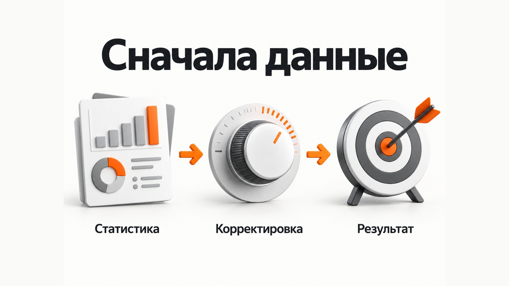

Блог о платном трафике
Корректировки ставок в Яндекс Директ
Корректировки ставок в Яндекс Директ позволяют повысить или понизить ставку для определённых пользователей или условий показа. Например, можно платить больше за мобильный трафик, отдельно изменить ставку для Москвы, повысить её для посетителей сайта или снизить для аудитории, которая хуже оставляет заявки.
Но сама механика сейчас немного сложнее привычного понятия "прибавить 30% к ставке". В зависимости от стратегии корректировка может влиять на ставку, целевую цену конверсии или ДРР. Поэтому сначала нужно понимать, чем именно управляет выбранная стратегия.
Есть и второй важный момент, который особенно заметен при ручном управлении ставками на поиске. Цифры прогнозного объёма трафика в интерфейсе Директа нельзя воспринимать как гарантию конкретной позиции. На практике фактические показы могут заметно отличаться от того, что обещает прогноз.
Что такое корректировка ставок
Если исходная ставка составляет 100 рублей, а для определённой аудитории установлена корректировка +50%, при подходящем показе ставка увеличится до 150 рублей.
При корректировке -40% она уменьшится до 60 рублей.
Это позволяет по-разному участвовать в аукционе для разных сегментов, не создавая под каждый из них отдельную рекламную кампанию.
В Директе доступны корректировки по разным условиям:
- целевой аудитории;
- полу и возрасту;
- региону;
- устройствам;
- платежеспособности;
- погодным условиям;
- отдельным форматам размещения;
- уровню трат в категории;
- стоимости привлечения в ЕПК.
Конкретный набор зависит от типа кампании и стратегии.
Например, если статистика показывает, что посетители с мобильных устройств оставляют качественные заявки и хорошо покупают, для мобильного трафика можно установить повышающий коэффициент. Если какой-то регион расходует деньги, но почти не приносит продаж, для него можно снизить ставку.
Главное здесь - корректировать рекламу по статистике, а не по предположениям.
Как корректировки работают с разными стратегиями
Название "корректировка ставок" немного вводит в заблуждение, потому что корректируется далеко не всегда непосредственно ставка.
При ручном управлении и стратегии "Максимум кликов" коэффициент влияет на ставку.
При "Максимуме конверсий" с ограничением по цене конверсии корректируется уже целевой CPA. Например, при целевой цене заявки 2 000 рублей и корректировке +50% для определённого сегмента алгоритм может ориентироваться для него уже на 3 000 рублей.
При стратегии с ограничением по ДРР корректируется целевое значение ДРР.
Поэтому перед установкой коэффициента нужно понимать его экономический смысл. Повышение на 100% в автоматической стратегии может означать, что вы фактически разрешили системе платить за определённую аудиторию значительно дороже.
Подробнее - в статье «Какую стратегию выбрать в Яндекс Директ».
Какие корректировки ставок использовать
По устройствам
Можно отдельно управлять показами на смартфонах, планшетах, компьютерах и других типах устройств.
Это полезно, когда результаты сильно различаются. Например, мобильный трафик может давать много заявок, но плохо конвертироваться в продажи. Или наоборот, большая часть клиентов может приходить именно со смартфонов.
Сначала я бы посмотрел статистику по устройствам, CPA и качеству заявок, а уже потом менял коэффициенты.
По полу и возрасту
Позволяют повышать или понижать ставки для отдельных демографических групп.
Здесь особенно опасно опираться на представления о целевой аудитории вместо реальных данных.
Если кажется, что услугу покупают преимущественно женщины 35-44 лет, это ещё не причина сразу повысить им ставку и отключить остальных. Сначала нужно посмотреть фактические конверсии.
По регионам
Полезны для кампаний, которые одновременно работают в нескольких городах или регионах.
Допустим, Москва приносит заявки по приемлемой цене, а другой регион значительно хуже конвертируется. Можно перераспределить активность кампании с помощью коэффициентов.
При большой разнице в экономике регионов я часто предпочитаю вообще разделять их по отдельным кампаниям. Так проще контролировать бюджет и видеть результат.
По целевой аудитории
Можно использовать сегменты пользователей и менять для них условия участия в аукционе.
Например:
- посетители сайта;
- пользователи, положившие товар в корзину;
- существующие клиенты;
- определённые сегменты Яндекс Аудиторий.
Это уже более осмысленный способ работы, поскольку корректировка основана не на абстрактном признаке вроде возраста, а на поведении человека.
По платежеспособности
Яндекс выделяет несколько наиболее платежеспособных сегментов аудитории. Ставку для них можно изменить отдельно.
Такая настройка потенциально интересна для дорогих товаров и услуг, но само попадание человека в платежеспособный сегмент ещё не означает, что он обязательно станет хорошим клиентом конкретного бизнеса.
Решение снова нужно принимать по статистике.
Несколько корректировок могут работать одновременно
Если один пользователь одновременно попадает под несколько условий, коэффициенты не складываются, а применяются последовательно.
Например:
- базовая ставка - 100 рублей;
- смартфон - +50%;
- нужный регион - +20%.
Сначала ставка становится 150 рублей, затем к ней применяется ещё +20%.
Итог:
150 × 1,2 = 180 рублей.
Это важно учитывать, если в кампании накоплено много повышающих коэффициентов.
Цена за клик в Яндекс Директе помогает оценить их влияние на стоимость переходов. Несколько вполне умеренных корректировок вместе могут довольно сильно изменить реальную ставку.
Как сделать корректировку ставок в Яндекс Директ
В веб-интерфейсе настройка делается на уровне кампании или группы объявлений.
Порядок действий:
1. Откройте нужную кампанию.
2. Перейдите в её настройки.
3. Найдите раздел "Дополнительные настройки".
4. Откройте блок "Корректировки".
5. Выберите тип корректировки.
6. Укажите нужный сегмент или условие.
7. Задайте повышающий или понижающий коэффициент.
8. Сохраните изменения.
Корректировку также можно задавать непосредственно при редактировании группы объявлений. Если одинаковый тип корректировки установлен одновременно на уровне кампании и группы, приоритет будет у настройки группы.
Для массового управления большим количеством кампаний можно использовать Директ Коммандер. Он позволяет менять корректировки сразу для нескольких кампаний или групп.
Ставка в Директе не покупает конкретное место в выдаче
Это одна из вещей, которые чаще всего неправильно понимают при ручном управлении ставками.
Раньше было привычно мыслить позициями: первое место, второе место, вход в спецразмещение и так далее.
Сейчас ставка на поиске фактически определяет доступный объём трафика. Вы не покупаете гарантированное первое или второе место.
Сам Яндекс пишет, что объём трафика связан с потенциальной кликабельностью места показа. Например, первое место среди четырёх премиум-показов условно соответствует объёму 100, следующие позиции могут давать 85, 75 и 65. Некоторые расширенные форматы способны давать объём выше 100.
При этом конкретное место объявления определяется для каждого аукциона отдельно.
На него влияют:
- ставка;
- прогноз CTR;
- коэффициент качества;
- конкуренты;
- поисковый запрос;
- внешний вид и дополнительные элементы объявления;
- конкретный пользователь.
Поэтому поставить ставку "на первое место" в буквальном смысле нельзя.
Почему прогноз объёма трафика может не совпадать с реальностью
Вот здесь есть очень важный практический нюанс.
В интерфейсе Директа рядом с ключевой фразой можно увидеть прогнозируемые ставки для разных объёмов трафика. Иногда интерфейс показывает, что установленной ставки должно хватать практически на максимальный объём.
После запуска открываем статистику и обнаруживаем, что объявление в среднем показывается вторым, третьим или ещё ниже.
Это нормальная для Директа ситуация.
Сам Яндекс отдельно предупреждает, что ставки рассчитываются за объём трафика, а не за конкретную позицию, поэтому даже ставка, достаточная для объёма 100% и выше, не гарантирует первое место.
Кроме того, прогноз строится на имеющихся данных, а реальный аукцион происходит заново при каждом показе. Конкуренция, запрос пользователя, состав рекламного блока и другие условия постоянно меняются. Реальные показатели могут отличаться от прогнозных.
Поэтому цифру в интерфейсе я воспринимаю именно как ориентир.
Если мне действительно нужен больший объём поискового трафика, я смотрю не только на прогнозную ставку, но и на фактическую статистику.
Как понять, хватает ли реальной ставки
Открываем Мастер отчётов и смотрим фактические данные по нужным фразам и периодам.
В статистике доступны, в частности:
- средняя позиция показа;
- средний объём трафика;
- средняя ставка за клик;
- показы;
- клики;
- расход;
- конверсии;
- CPA.
Средний объём трафика показывает, какой трафик фактически получало объявление с тех мест, где оно показывалось. Средняя позиция позволяет дополнительно увидеть реальное положение объявления на первой странице поиска.
Например, интерфейс показывает, что ставка должна обеспечивать высокий объём трафика. Но фактически средняя позиция показа около 2,5, а средний объём трафика заметно ниже ожидаемого.
Если получение большего количества поискового трафика для этой кампании оправдано экономически, ставку можно поднять выше прогнозной и снова посмотреть статистику.
Я встречаю такую ситуацию регулярно. Ориентироваться исключительно на красивую цифру прогнозатора я бы не стал. Реальный аукцион всегда важнее предварительного расчёта.
Нужно ли всегда выкупать максимальный объём трафика
Нет.
Максимальный объём трафика почти всегда означает более агрессивное участие в аукционе. Стоимость переходов может существенно вырасти, а количество дополнительных заявок - совсем не обязательно пропорционально.
Пример:
Средний объём трафика:
CPC - 100 ₽
Заявки - 10
CPA - 2 000 ₽
Максимальный объём:
CPC - 170 ₽
Заявки - 13
CPA - 2 615 ₽
Сам по себе рост количества обращений ещё не означает, что повышение ставки было выгодным.
Основная задача рекламы - не выиграть аукцион и не показать объявление первым. Нужно получать достаточное количество целевых обращений по экономически приемлемой цене.
Когда повышать ставку выше прогноза Директа
Это имеет смысл, если одновременно выполняются несколько условий:
- речь идёт о действительно ценном поисковом трафике;
- фактический объём трафика ниже необходимого;
- статистика показывает, что объявления регулярно оказываются ниже желаемого уровня;
- дополнительные клики способны дать больше заявок;
- экономика бизнеса позволяет платить за них дороже.
Особенно такая логика встречается в дорогих поисковых нишах с горячим спросом.
При этом повышать ставки просто ради первой позиции бессмысленно.
В одном из моих кейсов по швейному производству ставки на поиске управлялись вручную именно потому, что при небольшом бюджете требовался жёсткий контроль расхода по отдельным фразам. Подробнее - в кейсе по швейному производству.
Когда корректировки могут навредить
Основная ошибка - начинать активно управлять коэффициентами без достаточной статистики.
Например, рекламодатель видит две заявки с компьютеров и ни одной со смартфонов и сразу ставит мобильным -80%.
На небольшом количестве данных это может быть обычной случайностью.
В результате кампания сама лишается части потенциальных клиентов.
То же самое касается возраста, пола, региона и платежеспособности. Корректировка должна отвечать на конкретный вопрос: этот сегмент действительно приносит бизнесу другой результат или мне просто кажется, что он должен работать иначе?
Особенно аккуратно я бы вмешивался в автоматические стратегии. Алгоритмы Директа сами анализируют большое количество сигналов о пользователе. Дополнительные ручные ограничения имеют смысл, когда для них существует понятное экономическое обоснование.
Если реклама работает плохо в целом, обычно полезнее сначала провести аудит Яндекс Директа и найти основную проблему, а не пытаться исправить результат десятком коэффициентов. Подробнее - в статье «Аудит Яндекс Директ».

Главное о корректировках ставок
Корректировки ставок в Яндекс Директ позволяют по-разному участвовать в аукционе для отдельных устройств, аудиторий, регионов и других условий.
Но использовать их стоит только на основании статистики.
И отдельно нужно помнить про поиск: прогнозная ставка и прогнозируемый объём трафика в интерфейсе - это ориентир, а не обещание конкретного места. Даже объём 100% и выше не гарантирует первую позицию.
Если фактическая статистика показывает, что объявление получает меньше трафика, чем нужно бизнесу, ставку иногда приходится повышать выше значения, которое показывает интерфейс. Но конечным критерием всё равно должны оставаться заявки, продажи и экономика рекламы, а не место объявления в поисковой выдаче.